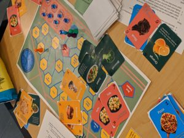
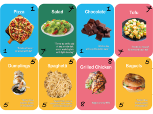

Our Data Story
Incoming MIT Students have it tough. While classes are hard, so is the sudden independence and decision-making around food. This is particularly true for students on East Campus, many of whom don’t have a meal plan as first years. While nutritious food is, in theory, available and affordable, there are some challenges around making it available and accessible to students.
There are a few particular barriers we identified through conversations with undergraduate students:
- The lack of shopping options that are available to the students
- A lack of understanding around how much food costs and is required to prepare
- The availability of unhealthy food more easily – it is more physically proximate than more healthful foods
- Understanding what kinds of food are even available and healthy. When students see nutritious food, how do they act on it?
Understanding our Audience
- Our audience for this particular data story is freshmen at MIT Orientation who are not on a meal plan. This is a game designed for groups of 4 to play for roughly 30 minutes that draws them in with the promise of a small prize and an opportunity to strategize (if not at MIT, then where?). The combination of discussion questions, literal storytelling, and data embedded in the game can allow people to connect different points of information.
- We wanted to tell them this particular data story because we believe that this is an important and underlooked issue: a 2017 report showed that 13% of MIT undergraduate Students are food insecure, and while there have been initiatives by the administration to increase access to food, studies show that access is only half the equation: educating the buying public about their consumption choices can help them leverage this increased access to food in a meaningful way.
- We also think that this game can have an outsized impact: even though at orientation realistically, only a small number of students will play, students live in close quarters and are likely to engage in conversation about this issue and help create larger conversation.
 At a high level, our game is comprised of a board that resembles the MIT campus. Each player first draws a card which determines where on the board they start (the “role cards”). One of these players is the chef. Then, at each turn, players draw event cards and move spaces if possible. Finally, they draw food cards (the number varies depending on the event cards) with different point values depending on the nutrition values. Players must strategize on how to end up in the same place as the Chef, who then takes the food cards and tries to maximize the point values by filling in 8 empty “plates.” at the end of the board. To promote some social cohesion, we also included discussion questions on some of the event cards.
At a high level, our game is comprised of a board that resembles the MIT campus. Each player first draws a card which determines where on the board they start (the “role cards”). One of these players is the chef. Then, at each turn, players draw event cards and move spaces if possible. Finally, they draw food cards (the number varies depending on the event cards) with different point values depending on the nutrition values. Players must strategize on how to end up in the same place as the Chef, who then takes the food cards and tries to maximize the point values by filling in 8 empty “plates.” at the end of the board. To promote some social cohesion, we also included discussion questions on some of the event cards.

We ran a pilot game with four players (thanks to the promise of snacks) and received some valuable feedback. On the positive side, players felt that much of the board and the specific choices of events accurately reflected some of the barriers to free food. They also enjoyed discussion questions which prompted them to think about their lives and how to engage with others. Based on their feedback, we also made some changes to the actions to make the game more engaging; we also shortened the length of play time to increase the challenge component. Finally, we enhanced the discussion questions by centering them only around food.
Processing the data
When we started working on this process, it was driven largely by the data from the report from the Food Insecurity Solutions Working Group at MIT, which reported that 13% of undergraduate students have trouble accessing food. This alarming statistic suggested that more needed to be done to empower students into accessing food, and making sure that these were nutritious options. This game, driven by food supply and life event data, aims to create a social experience that also empower incoming students.
We incorporated a couple of data sources in our game, ranging from anecdotal and qualitative to specific nutritional data.
First, we looked at data from the MIT Sloan Slack channel to gather data on free food offerings and understand the nature of the food easily available around campus. We then added categories of home-cooked meals, based on anecdotal data of the popularity of dishes from cooking groups.
Our next step was to get point values for each of these dishes. Our rewards system values are derived from the USDA Food Composition database. We categorized approximately 40 foods into protein, produce (fruits and veggies), starches, and junk food. Proteins were ranked by “protein per 100 grams,” starches by “fiber per 100 grams,” and produce by “vitamins and minerals per 100 grams.” Junk food was given a 1-point value across the board. While an imperfect measurement method, this system allowed us to generally assess each food’s value as it pertains to decision-making for MIT freshmen.

In addition to this data, we also incorporated spatial data into the board game itself: the board is actually a schematic map/diagram of key buildings and landmarks akin to a subway system map that shows points in relation to each other. This allows us to connect the board game to incoming first years’ realities, and also serves as a tool to educate them about where different spots are.
To reflect daily happenings in student’s lives, we gathered instances of common events in their lives and translated those into event cards. Some of these include: happening upon free food, having to go to class, last-minute assignments, and transit memberships (such as the Blue Bikes) which increase the distances traveled. We set the proportions of each event type so that their probabilities matched the real world.